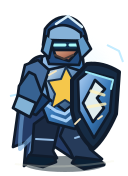
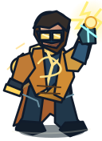
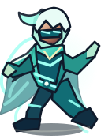
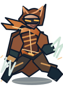

Blackharbor / Experimental Character Art
Open the real combat demoNEW TACTICAL MINIATURES
Four independently illustrated, full-body character graphics created for the real combat renderer. Compare them with existing standees inside the art lab.

miniature-bulwark.svg
miniature-volt.svg
miniature-wisp.svg
miniature-lynx.svgThe illustrations are real, standalone SVG game assets (transparent backgrounds and scalable geometry), not crops of a screenshot. The experiment runs only in the preview art lab; the approved production combat graphics and existing campaign saves remain unchanged.